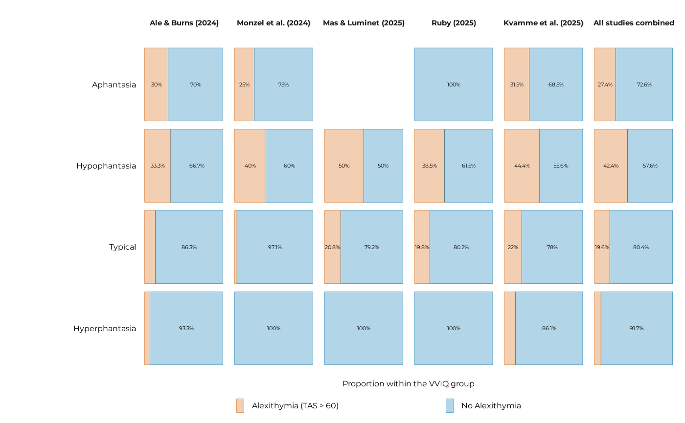

Plot alexithymia proportions within VVIQ groups based on a summary table
Source:R/plot_data_distribution.R
plot_alexithymia_proportions.RdThis function creates a bar plot showing the proportions of alexithymia groups within VVIQ groups for each study as well as for the combined data across all studies. The plot includes options for customizing the appearance of the bars, text labels, facets, and overall theme.
Usage
plot_alexithymia_proportions(
df_summary,
var_x,
bar_alpha = 0.3,
bar_lw = 0.1,
prop_threshold = 0.16,
prop_txt_size = 1.5,
ncol = 6,
limits = c("hyperphantasia", "typical", "hypophantasia", "aphantasia"),
title = NULL,
subtitle = NULL,
x_lab = NULL,
y_lab = "Proportion within the VVIQ group",
marg = 8,
base_size = 7,
...
)Arguments
- df_summary
A summary data frame containing counts and proportions of alexithymia groups within VVIQ groups, typically generated using the
summarise_aph_and_alexi()function.- var_x
The variable to be plotted on the x-axis (e.g., vviq_group_4).
- bar_alpha
Transparency level of the bars.
- bar_lw
Line width of the bar borders.
- prop_threshold
Threshold for displaying proportion text labels on the bars.
- prop_txt_size
Size of the proportion text labels on the bars.
- ncol
Number of columns for facet wrapping.
- limits
Limits for the x-axis categories.
- title
Title of the plot.
- subtitle
Subtitle of the plot.
- x_lab
Label for the x-axis.
- y_lab
Label for the y-axis.
- marg
Margin size around the plot.
- base_size
Base font size for the plot theme.
- ...
Additional arguments passed to the
theme_pdf()function.
Examples
df_summary <- summarise_aph_and_alexi(all_data, vviq_group_4)
plot_alexithymia_proportions(
df_summary, vviq_group_4,
base_size = 12,
prop_txt_size = 3
)
